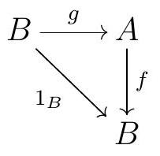

A diagram in a category \(\mathscr{C}\) is a directed multigraph whose vertices are objects in \(\mathrm{C}\) and whose arrows/edges are morphisms in \(\mathscr{C}\text{.}\) A commutative diagram in \(\mathscr{C}\) is a diagram in which for each pair of vertices \(A\) and \(B\text{,}\) any two paths from \(A\) to \(B\) compose to the same morphism.
Example1.1.13.Commutative Diagram.
The diagram
commutes if and only if \(g f=v u\text{.}\)
There are some special types of arrows we will want to consider.
Definition1.1.14.Morphism Inverses.
Let \(\mathscr{C}\) be any category.
An arrow \(f \in \operatorname{Hom}_{\mathscr{C}}(A, B)\) is left invertible if there exists \(g \in \operatorname{Hom}_{\mathscr{C}}(B, A)\) such that \(g f=1_{A}\text{.}\) In this case, we say that \(g\) is the left inverse of \(f\text{.}\) So \(g\) is a left inverse of \(f\) if the diagram
commutes.
An arrow \(f \in \operatorname{Hom}_{\mathscr{C}}(A, B)\) is right invertible if there exists \(g \in \operatorname{Hom}_{\mathscr{C}}(B, A)\) such that \(f g=1_{B}\text{.}\) In this case, we say that \(g\) is the right inverse of \(f\text{.}\) So \(g\) is a right inverse of \(f\) if the diagram

commutes.
An arrow \(f \in \operatorname{Hom}_{\mathscr{C}}(A, B)\) is an isomorphism if there exists \(g \in \operatorname{Hom}_{\mathscr{C}}(B, A)\) such that \(g f=1_{A}\) and \(f g=1_{B}\text{.}\) Unsurprisingly, such an arrow \(g\) is called the inverse of \(f\text{.}\)
Definition1.1.15.Monic and Epic.
An arrow \(f \in \operatorname{Hom}(B, C)\) is monic, a monomorphism, or a mono if for all arrows
\begin{equation*}
A \stackrel{g_{1}}{\underset{g_{2}}{\longrightarrow}} B \stackrel{f}{\longrightarrow} C
\end{equation*}
if \(f g_{1}=f g_{2}\) then \(g_{1}=g_{2}\text{.}\)
Similarly, an arrow \(f \in \operatorname{Hom}(A, B)\) is an epi or an epimorphism if for all arrows
\begin{equation*}
A \stackrel{f}{\longrightarrow} B \underset{g_{2}}{\stackrel{g_{1}}{\longrightarrow}} C
\end{equation*}
if \(g_{1} f=g_{2} f\) then \(g_{1}=g_{2}\text{.}\)
Show that in Set, the monos coincide with the injective functions and the epis coincide with the surjective functions.
Example1.1.16.Isomorphisms.
In \(\Grp\text{,}\) Ring, and R\(\Mod\) the isomorphisms are the morphisms that are bijective functions.
In contrast, in Top the isomorphisms are the homeomorphisms, which are the bijective continuous functions with continuous inverses. These are not the same thing as just the bijective continuous functions.
Show that the usual inclusion \(\mathbb{Z} \longrightarrow \mathbb{Q}\) is an epi in the category Ring.
This should feel weird: it says being epi and being surjective are not the same thing. Similarly, being monic and being injective are not the same thing.
Show that the canonical projection \(\mathbb{Q} \longrightarrow \mathbb{Q} / \mathbb{Z}\) is a mono in the category of divisible abelian groups.  1 
Show that given any poset \(P\text{,}\) in the poset category of \(P\) every morphism is both monic and epic, but no nonidentity morphism has a left or right inverse.
There are some special types of objects we will want to consider.
Definition1.1.17.Initial and Terminal Objects.
Let \(\mathscr{C}\) be a category. An initial object in \(\mathscr{C}\) is an object \(i\) such that for every object \(x\) in \(\mathscr{C}, \operatorname{Hom}_{\mathscr{C}}(i, x)\) is a singleton, meaning there exists a unique arrow \(i \longrightarrow x\text{.}\) A terminal object in \(\mathscr{C}\) is an object \(t\) such that for every object \(x\) in \(\mathscr{C}, \operatorname{Hom}_{\mathscr{C}}(x, t)\) is a singleton, meaning there exists a unique arrow \(x \longrightarrow t\text{.}\) A zero object in \(\mathscr{C}\) is an object that is both initial and terminal.
Initial objects are unique up to unique isomorphism. Terminal objects are unique up to unique isomorphism.
So we can talk about the initial object, the terminal object, and the zero object, if they exist.
Example1.1.18.Initial and Terminal Objects.
The empty set is initial in Set. Any singleton is terminal. Since the empty set and a singleton are not isomorphic in Set, there is no zero object in Set.
The 0 module is the zero object in \(R\)\(\Mod\text{.}\)
The trivial group \(\{e\}\) is the zero object in \(\Grp\text{.}\)
In the category of rings, \(\mathbb{Z}\) is the initial object, but there is no terminal object unless we allow the 0 ring.
There are no initial nor terminal objects in the category of fields.
An abelian group \(A\) is divisible if for every \(a \in A\) and every positive integer \(n\) there exists \(b \in A\) such that \(n b=a\text{.}\)

.jpg)